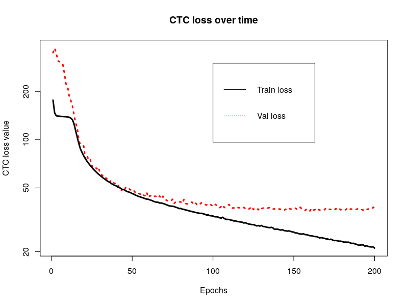

"GSoC 2018 and Speech Recognition for the Flux Model Zoo: The Conclusion"
Here we are on the other end of Google Summer of Code 2018. It has been a challenging and educational experience, and I wouldn't have it any other way. I am thankful to the Julia community for supporting me through this. I've learned a lot and become even more familiar with neural nets than I was before, and I learned how to do basic GPU programming, which will be incredibly useful for my academic career.
The rest of this blog post will summarize my project and the work I've done over the whole summer, remark on what work remains to be done, and conclude with a brief tutorial of how to run the code I've written to try it out for yourself.
Have you ever wanted your computer to understand speech?
Speech recognition is currently in vogue among many tech companies. Google and Amazon, for example, are heavily pushing their standalone digital assistant devices, Google Home and Alexa, respectively. Without functional speech recognition, these products would be dead in the water.
Unfortunately for many researchers and potential users of speech recognition, there doesn't seem to be as much documentation available for speech recognition systems as there is for image recognition, for example. The goal of this Google Summer of Code 2018 project was to contribute some speech recognition models to the Flux model zoo so that there would be some freely available models for others to work from.
At the end of the project, two different models were coded. The first is a rather new approach to using a loss function called connectionist temporal classification (CTC) (Graves et al., 2006). The model to be implemented was from Zhang et al. (2017), and it uses convolutional layers to learn temporal dependencies in the data, unlike traditional approaches to using the CTC loss which use recurrent layers. It is a very deep network, which the authors believe allows it to learn temporal dependencies.
The second network was an older style framewise recognition model, inspired by Graves & Schmidhuber (2005). It predicts the class for each chunk of audio that is passed through the network and uses categorical cross-entropy as its loss function. It would serve as a baseline for the CTC network to compare against.
For those who are unfamiliar with speech recognition systems, the mapping of acoustics to phone labels is still an unsolved problem in the sense that no one is achieving 95% or 99% accuracy on just the label identification for frames of audio. As such, the reported accuracies may seem underwhelming (and the CTC network's certainly are), but that's also characteristic of speech recognition systems.
Results of the CTC network
Once broken down into steps, the main tasks for this project were to implement the network architecture and to implement the CTC loss function in Flux and Julia. Naive implementations of both of these tasks came easy, but the performance was not suitable to be able to train the network. Improving the network's computational efficiency was not that difficult in retrospect because it only took adding a reshape call in Flux's Chain function to connect the convolutional layers to the fully-connected ones.
The real trial was getting the CTC loss to run correctly and efficiently. I at first was mucking around with CPU implementations before finally deciding to work on a simple port of Baidu's GPU implementation of CTC, warp-ctc. This was my first foray into writing GPU kernels, and I learned a lot. But after a couple weeks working on porting the kernels, I had a working GPU implementation of the loss function. Or so I thought. I spent weeks trying different training configurations and routines with a variety of optimizers, but I couldn't get the network to output predictions beyond the blank phone label category. I wrote about this in a couple of blog posts.
As it would turn out, there was a slight error in my implementation that stemmed from Baidu's warp-ctc library itself. As I did when I wrote a blog post about this error, I do not know whether it is actually an error in the context of the rest of Baidu's code. However, after fixing the error, I saw the loss decrease significantly in my code. Specifically, there was a section of code that evaluated to
when it should have evaluated to
More information on this is available in my previous post on it. Making this change caused the network to finally output label predictions for each time step of data. The labels don't necessarily always make sense, but it is at least making predictions.
And this is where the speech recognition system is sitting right now. The network architecture should be implemented correctly, and the loss function would seem to be running correctly now. That is, the network runs and learns, to an extent. You can assess for yourself how well it's learning based off the example output below:
Textual transcription
The reasons for this dive seemed foolish now.
Target sequence of phones
h# dh ix r iy z ax n z f axr dh ih s dcl d ay v s iy m dcl d f uw l ix sh epi n aw h#
Predicted sequence of phones
h# pau w iy bcl r iy ux z bcl b iy bcl b uw z ay n pcl p z iy n dcl d v w iy er h#
The phone error rate for this prediction compared to the target was approximately 84%. This model is obviously not ready to be added to the model zoo, as it is not performing well.
Results of the framewise network
The main task for the framewise network was to find how to efficiently train the network. In terms of recognition results, the framewise network fared much better than the CTC network. In just two epochs of training, it reached approximately 53.5% label prediction accuracy on the test set. Obviously, the network should be trained longer than that to achieve similar performance as Graves & Schmidhuber, but it's noteworthy that it's outperforming the CTC network even at such an early stage. The discrepancy between this network and the CTC network's performance is astounding. Even though the task of the CTC network is more difficult, it is striking, if not surprising, that allowing the network to exploit extra information in the training data grants an improvement of this magnitude.
What remains to be done
The framewise network is for all intents and purposes done. It should suit its purpose as a demonstration network, and it comes pretty close to matching Graves's reported performance for the network. If it were desired to have it run faster, it could be made to work with batching and run on the GPU.
For the CTC network, there needs to be an investigation as to why it is not learning to perform to the degree Zhang et al. report. The following figure is a plot of the training and validation loss over time from the first time running the network with the corrected loss function mentioned above. The optimizer was AMSGrad with a learning rate of \(10^{-4}\). It is characteristic of the behavior I've seen with other optimizers and training configurations, whether they are fresh starts or continuing previous training.

The validation loss is settling at a suboptimal level, even though the training loss continues to decrease. I am unsure at this juncture what the cause of this behavior may be, since I have endeavored to hew as closely as possible to the implementation details given by Zhang et al. I don't believe it is in the CTC function since I have tested the CTC loss function several times against hand-worked solutions and seen it produce correct results; similarly, the gradients it provided allowed the network to fit one training example to a near-zero level of loss, so it would seem the function is providing a loss signal reliable enough to minimize the loss. It is possible that how I called the backpropagation needs to be investigated to see if the loss values from within a batch were being composed properly.
Running the models
Running the training procedure for the models should be straightforward. Make sure that the WAV, Flux, CuArrays, JLD, and BSON packages are installed. As well, install the fork I've made of the MFCC package (which only updates one line to make a function run on Julia 0.6). Start by cloning the Git repository for the project:
$ git clone https://github.com/maetshju/gsoc2018.git
The user will need to download the TIMIT speech corpus from the Linguistic Data Consortium, as I discussed in the first section of this previous blog post.
CTC model
Navigate into the speech-cnn folder. To extract the data from the TIMIT corpus, use the 00-data.jl script. More information on this script can be found in the blog post dedicated to it.
$ julia 00-data.jl
Now, to train the network, run the 01-speech-cnn.jl script. Make sure you've removed the README.md files from the data folders, if you downloaded them.
$ julia 01-speech-cnn.jl
Note that it is essentially necessary to have a GPU to train the network on because the training process is extremely slow on just the CPU. Additionally, the script calls out to the GPU implementation of the CTC algorithm, which will fail without a GPU. The script will likely take over a day to run, so come back to it later. After the script finishes, the model should be trained and ready for use in making predictions.
Framewise model
Navigate into the speech-blstm folder. To extract the data from the TIMIT corpus, use the 00-data.jl script.
$ julia 00-data.jl
Now, to train the network, run the 01-speech-blstm.jl script. Make sure you've removed the README.md files from the data folders, if you downloaded them.
$ julia 01-speech-blstm.jl
This network trains reasonably fast on the CPU, so GPU functionality was not implemented.
Get the code
The code written during this project may be found on my GitHub. There are also several pull requests that were made to contribute code to the larger package ecosystem:
- Adding epsilon term to Flux's binary cross entropy loss
- Adding CTC loss to Flux
- Adding the framewise speech recognition model to the Flux model zoo
References
Graves, A., & Schmidhuber, J. (2005). Framewise phoneme classification with bidirectional LSTM and other neural network architectures. Neural Networks, 18(5-6), 602-610.
Graves, A., Fernández, S., Gomez, F., & Schmidhuber, J. (2006). Connectionist temporal classification: Labelling unsegmented sequence data with recurrent neural networks. In Proceedings of the 23rd international conference on machine learning (pp. 369-376). ACM.
Zhang, Y., Pezeshki, M., Brakel, P., Zhang, S., Bengio, C. L. Y., & Courville, A. (2017). Towards end-to-end speech recognition with deep convolutional neural networks. arXiv preprint arXiv:1701.02720.